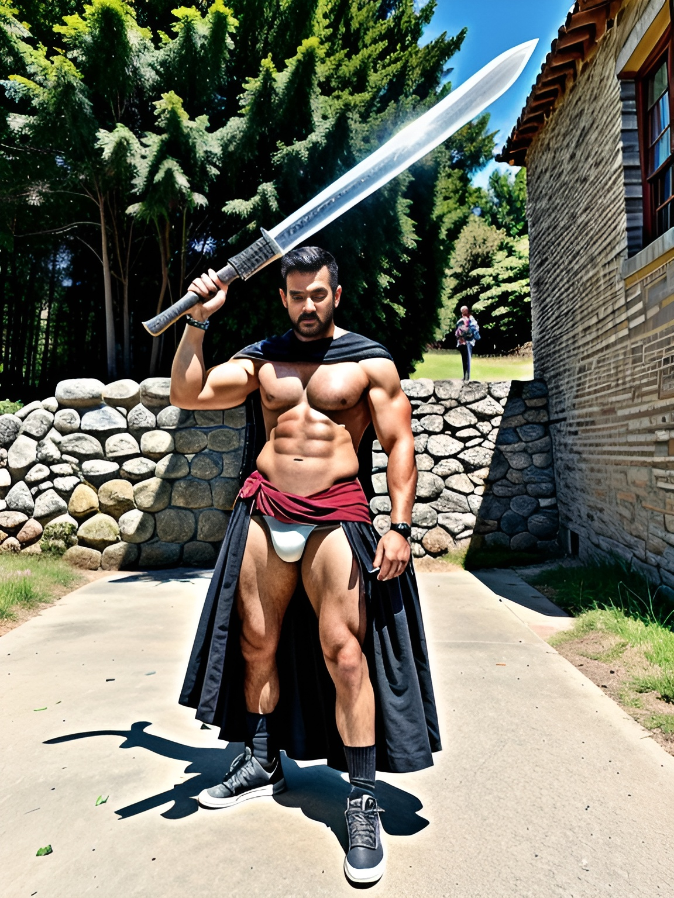
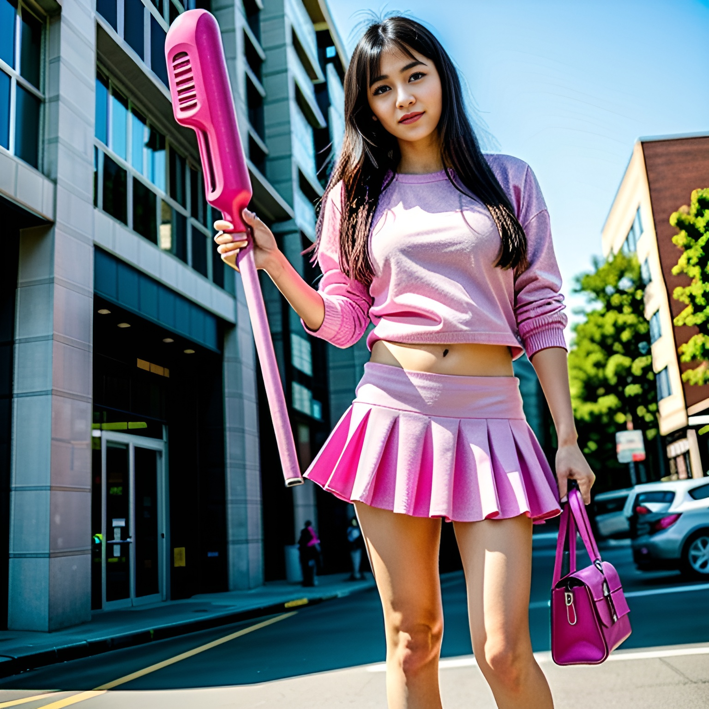

Pappion
Зміст
Розділ 1. Виклик
В коледжі "Аретуза" розцвітали студентські роки, наповнені надією та мріями про великі досягнення у світі програмування. Але все змінилося одного дня, коли до цього невеличкого навчального закладу прийшов Менторіус Івран – божевільний викладач, магія мовлення якого не залишила байдужим жодного студента.
Менторіус був дивакуватим, носив стародавні ряси та завжди тримав при собі дивний меч. Він прославився своєю здатністю підкоряти розум студентів та, здавалося, власними словами формувати їх долі. Коли він оголосив про свою ідею створити революційну туристичну соціальну мережу "Pappion", чотирьох студентів обрано для цієї місії:
-
Першим студентом був Михнар, бекенд розробник, який вразив Менторіуса своєю здатністю приваблювати будь-кого. Він прийняв завдання і вже невдовзі після цього став надзвичайно привабливим для інших, навіть без використання магії.
-
Другим був Химанор, студент, що мало несміливо брався за розробку додатку на IOS. Він привів із собою величезний меч "Драґонслейер", який, здавалося, жив та розмовляв як жива людина. Химанор завжди був радий поговорити, і меч не відмовляв йому в цьому.
 -
Лендос, третій у загоні, відзначався великою фізичною силою. Його найкращим другом була коза на ім'я Андріяна. Лендос часто сідав на неї та розмовляв, наче це була жива істота.
-
Четвертий студент, Рогандор, мав унікальну здатність перетворюватися на аніме-дівчинку з рожевим молотком у руках, який був досить ефективною зброєю.

Менторіус Івран надав студентам завдання: розробити соціальну мережу "Pappion", яка об'єднала б туристів з усього світу та дозволила б їм ділитися своїми подорожами та враженнями. Це була велика відповідальність, але студенти обіцяли виконати завдання.
Розділ 2. Труднощі
Проте незабаром виявилося, що завдання не таке просте, як здавалося на перший погляд. Лендос, не витримавши напруги, вирішив обрати легший шлях та відмовився від завдання. Химанор, відчувши свою перевагу через великий меч, влаштував зустріч із Лендосом, спробувавши забрати завдання у нього.
Лендос стояв перед Химандором, маючи на обличчі вираз визначеності.
Він знав, що завдання важливе, і не був готовий його віддати:
—
Химандоре, я розумію, що тобі це завдання більше до вподоби, але мені
важче долати труднощі. Ти можеш знайти інше завдання для себе.
Химандор усміхнувся та відповів:
— Лендосе, це бій за можливість
реалізувати нашу ідею. Я не можу просто так віддати це завдання.
Лендос підняв плечі, приготовуючись до зустрічі з Химандором. Повітря
наповнилося напруженістю, і всі навколо спостерігали за ними. Химандор
вийшов у бойовий стан, тримаючи великий меч "Драґонслейер" в руці.
Його очі світилися рішучістю. Лендос вдихнув глибоко і висловив велику
подяку своїй вірній козі Андріяні. Він підняв її на спину і сказав:
—
Андріяно, це наш час випробувати свою силу. Ми зробимо це разом!
Бій
розпочався з несподіванки. Химандор вдарив мечем у напрямку Лендоса,
але той зумів вирівняти удар. Захистивши себе, Лендос приспустив
голову і вперся в Химандора плечима, намагаючись виштовхнути його на
землю. Химандор відчув силу Лендоса, але відбився від нього вправним
рухом і віддалено відібрав меч. Вони обмінювались ударами, створюючи
враження гідного суперництва. Під час бою Лендос сказав:
—
Химандоре, це не про перемогу для мене. Це про те, щоби зробити
найкраще для нашого проекту.
Химандор відповів, зберігаючи
спокій:
— Я розумію, Лендосе, але я не можу дозволити собі
програти.
Бій тривав, і вони обидва витрачали свою енергію.
Здається, ніхто не міг передбачити, як завершиться цей бій.
За останній удар, Химандор використав усю свою силу та спритність і
зміг відібрати меч у Лендоса, виштовхуючи його на землю. Безмежна
відправна сила Химандора завершила цю битву. Лендос, лежачи на землі,
вигукнув:
— Ти зробив це, Химандоре. Заверш це завдання і здійсни
нашу мрію.
Химандор увігнав меч у землю поруч з Лендосом, та
останній навіть не поворохнувся, оскільки був мертвим.
Після того, як Химандор взяв завдання на себе, він зосередив увагу на розробці додатку для Android. Та, на жаль, він не зміг дотримати своєї обіцянки та виконати завдання в часових рамках, які встановив Менторіус. Постійні труднощі та технічні проблеми сповільнили його роботу, і він не зміг завершити проект вчасно.
Рогандор, який був відповідальний за розробку фронтенду, також зазнав несподіваних труднощів. Його здатність перетворюватися на аніме-дівчинку з рожевим молотком хоч і була корисною, але він витрачав занадто багато часу на декоративні елементи та анімацію, замість того, щоб зосередитися на основному функціоналі додатку. Менторіус дізнався про це та розлютився. Він покликав їх до великої зали за допомогою телепатії. Троє їх – Михнар, Химандор і Рогандор – стояли перед Менторіусом, який переповнений гнівом через невиконане завдання.
Розділ 3. Лють
Химандор намагався примирити ситуацію:
— Менторіусе, ми можемо
вирішити це іншим способом. Не потрібно влаштовувати бій.
Менторіус
відповів горілим поглядом:
— Ви зрадили мене, ВИ НЕ ВИКОНАЛИ
ЗАВДАННЯ. За це ви заплатите.
Рогандор додав:
— Менторіусе,
ми бачимо свої помилки. Дай нам ще шанс, ми виконаємо завдання.
Але
Менторіус був непохитним:
— Час вже пройшов. Настав час розплати.
Бій розпочався неймовірно жорстоко. Менторіус використовував магію,
щоб контролювати рухи студентів, і вони не мали іншого виходу, як
боротися. Рогандор перетворився на аніме-дівчинку і намагався
використовувати свій рожевий молоток для захисту, а Химандор тримався
свого великого меча "Драґонслейер" з усієї сили. Спроби студентів
відбитися від Менторіуса були марними. Вони знали, що він переважає їх
у силі та магії. Під час бою Химандор крикнув:
— Це не має сенсу!
Ми можемо вирішити це інакше!
Але Менторіус був несхибним:
—
Ви зрадили мене, і тепер вам доведеться заплатити за це!
Троє
студентів були на межі вичерпання, і вже здавалося, що це кінець
їхнього опору. Але тоді сталася несподівана подія.
Розділ 4. Відповідальність
Михнар, який до цього моменту був у тіні і оберігав свої сили, виявив
свою істинну природу.
Він вступив на бік Менторіуса та використав
свою силу привабливості для ослаблення Рогандора та Химандора.
Рогандор і Химандор були вражені та зраджені, і це змусило їх
відступити. Менторіус і Михнар разом завершили бій, переваживши двох
інших студентів.
Менторіус підійшов до Химандора та Рогандора,
які лежали вбиті духом і фізично виснажені, і сказав:
— Ви
покарані за вашу зраду.
Ця несподівана поворотна подія завершила
бій, але залишила гірку відчуженість між студентами і Менторіусом.
Розгублені
і розчаровані, Химандор і Рогандор залишили коледж, надіючись знайти
свій шлях у світі, де були несправедливо позбавлені можливості
реалізувати свою мрію.
Розділ 5. Новий початок
Після важкої битви, коли Химандор і Рогандор залишили коледж,
Менторіус і Михнар залишилися стояти разом серед руїн. Це була
незвичайна співпраця між вчителем і студентом, і вони обидва відчували
складність ситуації. Менторіус висловив своє погляд:
— Михнаре,
ти розумієш, що мені довелося зробити це. Вони зрадили мене.
Михнар
відповів обережно:
— Я розумію твою реакцію, Менторіусе, але ми
все ще можемо втілити вашу ідею. Можливо, нам потрібно спробувати
інший підхід.
Менторіус дивився на Михнара, як на студента, якого
він вважав своїм найкращим.
— Ти ще вірний ідеї "Pappion",
Михнаре?
Михнар впевнено відповів:
— Так, я вірю у цю ідею.
І я вірю, що разом ми можемо її здійснити. Давай спробуємо ще раз.
Менторіус поклав руку на плече Михнара та сказав:
— Тоді давай
візьмемо цей досвід і використаємо його, щоб зробити "Pappion" кращим,
ніж ми коли-небудь уявляли.